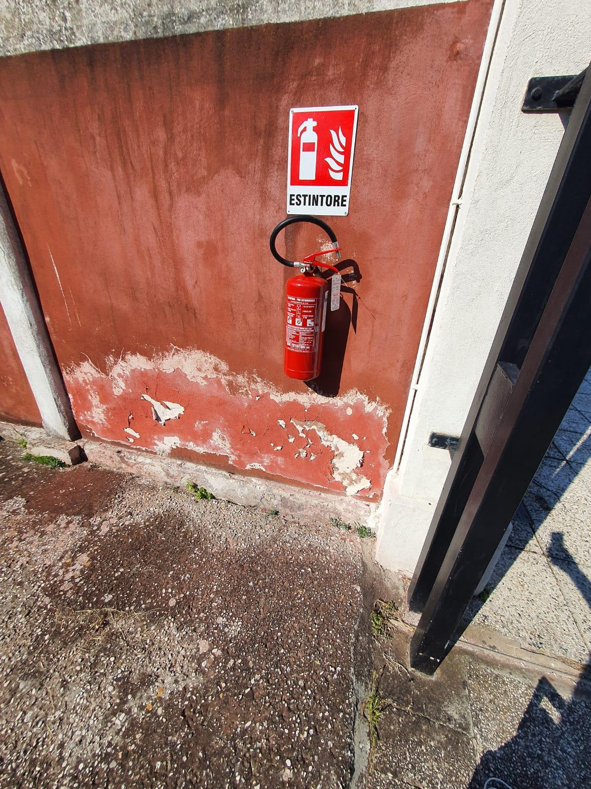
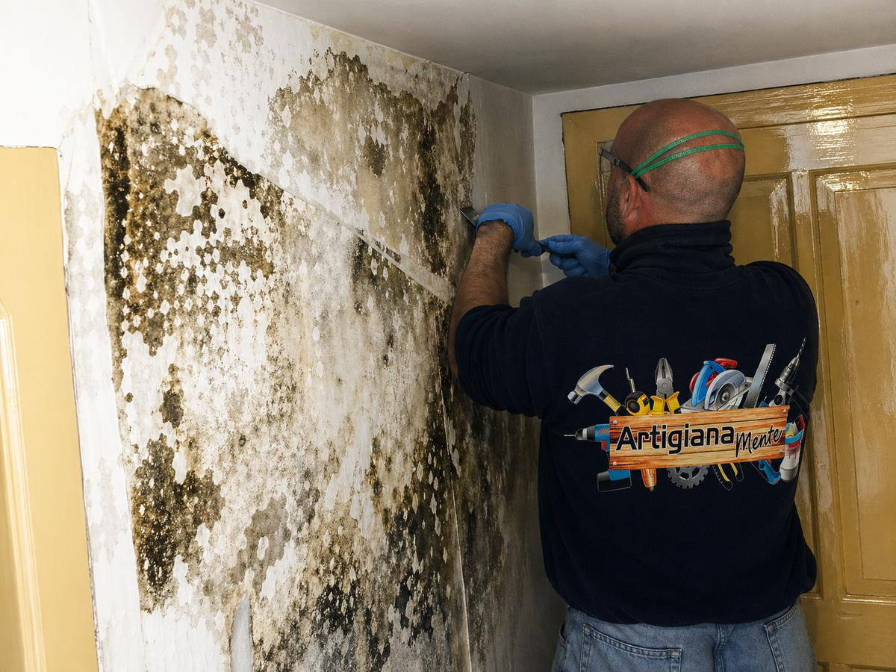
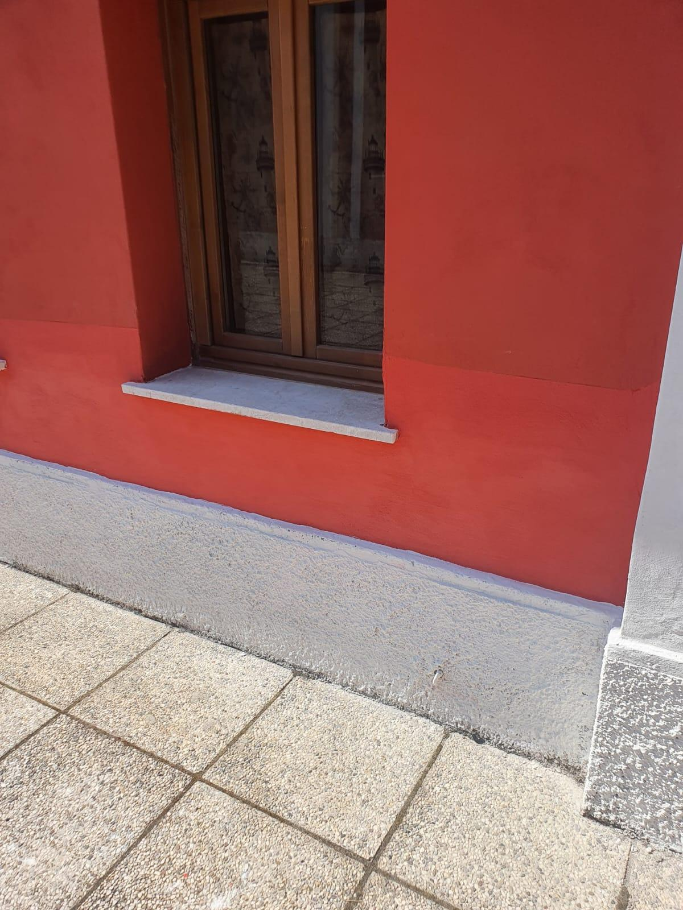
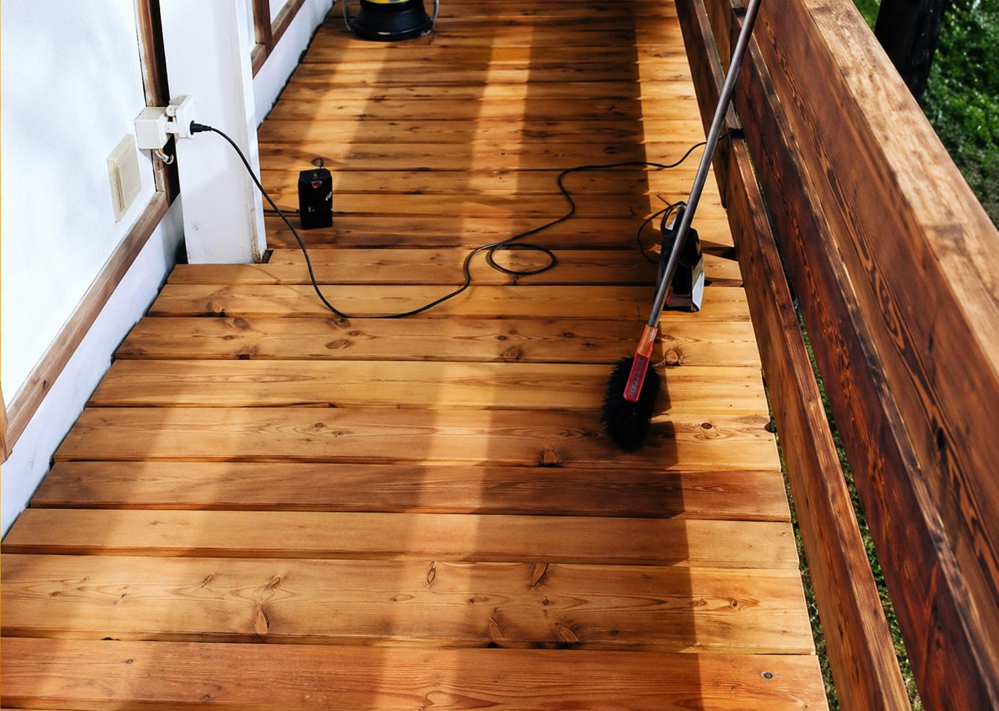

Risanamento dell’umidità nei muri
Nelle case vicino alla laguna l’umidità sale dai muri e porta con sé i sali: l’intonaco si gonfia, si macchia e si stacca. Prima capiamo da dove arriva, poi interveniamo.
Più sotto trovi i passaggi del lavoro. Il prezzo lo definiamo dopo un sopralluogo gratuito.

Passo 1 di 5
Diagnosi
Guardiamo il muro, misuriamo l’umidità e capiamo la causa: risalita dal terreno, infiltrazione o condensa.

Passo 2 di 5
Via l’intonaco rovinato
Togliamo l’intonaco ammalorato, anche oltre la parte che si vede, fino a trovare il muro sano.
Passo 3 di 5
Trattamento del muro
Puliamo e trattiamo la muratura in base alla diagnosi, per ridurre la risalita e i sali.
Passo 4 di 5
Intonaco traspirante
Rifacciamo l’intonaco con prodotti che lasciano respirare il muro e trattengono i sali.

Passo 5 di 5
Finitura
Pitture traspiranti a calce o ai silicati e, dove serve, una zoccolatura che protegge la base.
Cosa facciamo
- Umidità di risalita
- Sali ed efflorescenze
- Intonaci deumidificanti e traspiranti
- Muffa e condensa
- Zoccolature e piani terra
- Case storiche e in laguna


Domande frequenti
Basta ridipingere?
No. Se non si toglie la causa, macchie e sali tornano dopo poco tempo. Per questo partiamo dalla diagnosi.
Quanto costa?
Dipende da quanti metri di muro sono coinvolti e da quanto è profonda l’umidità. Per questo partiamo sempre da un sopralluogo.
Lavorate anche su edifici storici?
Sì, anche su case vecchie e in laguna, con materiali adatti alle murature antiche.
Per valutare il tuo lavoro raccontaci cosa ti serve:
Oppure chiama il 339 828 4863.

Servizio successivo Falegnameria